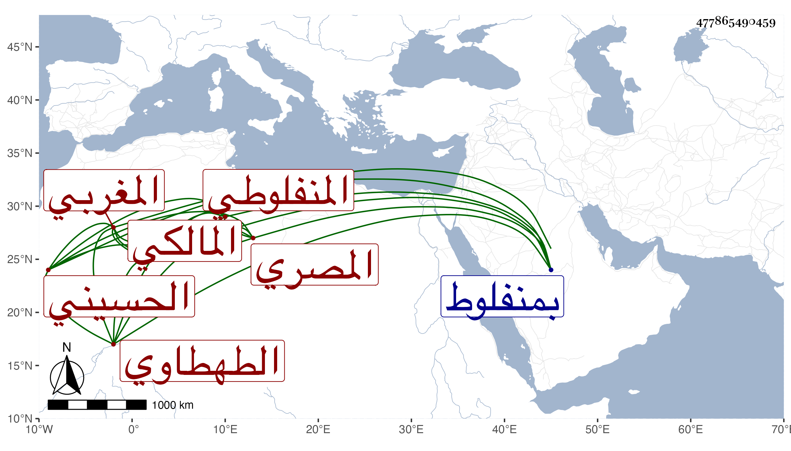

0902Sakhawi.DawLamic.ITO20230111-ara1.EIS1600.477865490459
Biography ID: 477865490459
262
عمر بن أبي بكر بن محمد بن حريز بمهملة ثم راء وآخره زاي مصغر القاضي السراج أبو حفص بن المجد الحسيني المغربي الأصل الطهطاوي المنفلوطي المصري المالكي أخو الحسام محمد الآتي مع نسبه ويعرف بابن حريز . ولد في سنة تسع عشرة بمنفلوط ونشأ بها فحفظ القرآن والرسالة والملحة وجود القرآن على الشهاب الطهطاوي وقرأ في الفقه على الزينين عبادة وطاهر والشهاب السخاوي وعليه قرأ في العربية والفرائض ولازمه وانتفع به ، وأخذ في علم الكلام عن أبي عبد الله محمد البسكري المغربي وسمع الحديث على النجم بن عبد الوارث فمن دونه كأحمد بن يونس المغربي نزيل الحرمين وأجاز له العلم البلقيني وناب عنه ثم عن من بعده من الشافعية وعن الولي السنباطي المالكي وحج وتعانى إدارة الدواليب والمعاصر ونحوها كأخيه وصار في قضاء أخيه يكتب على الفتوى بحيث ذكرت فضيلته واستحضاره للفروع مع معرفته بالديانة والأمانة والتصلب في أمر دينه ومزيد اليبس وحسن المعاملة وصدق اللهجة والوفاء بالعهد فلما مات استقر في منصبه وذلك في شعبان سنة ثلاث وسبعين فشكرت سيرته وصمم في قضايا وبرز في مواطن جبن فيها غيره لكن بدون دربة سيما وفكره مشتغل بما التزمه من يد أخيه بحيث كان سببا للترسيم عليه ، ودام في الكدر والضرر إلى أن صرف في صفر سنة سبع وسبعين فتزايد كدره ولم يزل في انخفاض ومخاصمات ومنازعات ونقص معيشة بحيث أنه شافهني قبيل موته بيسير بحالة آلمتني . مات في جمادى الأولى سنة اثنتين وتسعين رحمه الله وعفا عنه .
